← Index · ← Previous · Next →
Authors: Mengwei Liu, Zhenyu Li
Type: theory · Category: other · PDF: https://arxiv.org/pdf/2609.37101v1
Analysis basis: full PDF text, analyzed in chunks
Topic relevance: analog quantum simulation 1/5
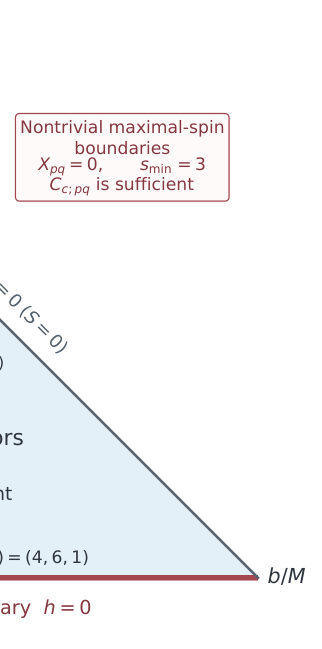
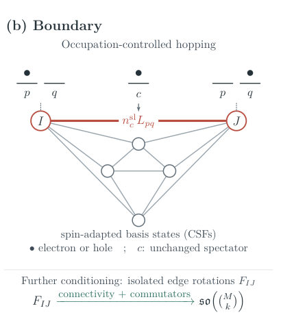
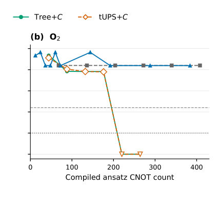
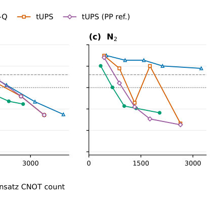
Summary. This paper theoretically determines the minimal quantum operations needed to achieve full controllability (generating all state-space rotations) in molecular quantum circuits. It establishes that the required complexity depends on the electronic sector, needing two orbitals in the interior but three on certain boundaries. This has direct implications for designing efficient and complete quantum algorithms for molecular simulations.
Why it may be interesting. This work provides fundamental theoretical constraints on the gate set required for simulating molecular electronic structure, directly impacting the resource estimation for quantum chemistry algorithms.
Main problem. The paper determines the minimal set of additional quantum operations needed, beyond simple orbital rotations, to ensure that a quantum circuit can generate every possible real state-space rotation within a fixed molecular electronic subspace.
Main result. The minimum number of orbitals required for this additional generator is two in the interior of the subspace and three on nontrivial boundaries, achievable using only one- and two-electron terms.
Method. The analysis uses structural questions from Lie algebra theory to classify the required generators, comparing the generated algebra to the target dynamical Lie algebra $\mathfrak{so}(d)$.
Model / system. The study models nonrelativistic, spin-free molecular Hamiltonians analyzed in fixed subspaces defined by particle number ($N$), total spin ($S$), and spin projection ($M_S$).
Key observables. The required minimum number of spatial orbitals (2 vs. 3), and the resulting ability to generate the full dynamical Lie algebra $\mathfrak{so}(d)$.
Important parameters / regimes. Fixed quantum numbers ($N, S, M_S$), the distinction between interior and maximal-spin boundaries, and the use of one- and two-electron terms.
Assumptions / limitations. The analysis assumes the system is spin-free and the Hamiltonian is real, and the results are structural, independent of the specific molecular Hamiltonian.
Figures summary. Not specified (Notes focus on theoretical results and comparisons rather than figure descriptions).
Paper structure. The paper progresses by first defining the problem in terms of generating the full state-space rotation group, then analyzing the interior and boundary sectors separately to derive the minimum orbital support required for the necessary additional generators.
Preserving particle number and spin helps quantum circuits target molecular electronic states, but does not guarantee access to every state with the required quantum numbers. We determine which additional operations, combined with spin-independent orbital rotations connecting all spatial orbitals, generate every real state-space rotation within each complete subspace of fixed particle number $N$, total spin $S$, and spin projection $M_S$. We consider spin-free molecular calculations in real orbitals, without an additional spatial-symmetry restriction, and continuously tunable operations that preserve particle number, full spin symmetry, and real amplitudes. Below the maximal-spin limits set by the electron and hole numbers, repeated singlet-pair transfer between any two fixed spatial orbitals is sufficient. On nontrivial maximal-spin boundaries, pair transfer vanishes, and an additional generator built from one- and two-electron terms is sufficient exactly when its action in the target subspace is not a linear combination of orbital-rotation generators. The minimum number of spatial orbitals needed by one additional generator is two in the interior and three on nontrivial boundaries, even when terms involving more than two electrons are allowed. Both minima are attained using only one- and two-electron terms. The three-orbital optimum rotates two orbitals according to the occupation of a third, and its unitary factors exactly into eight commuting Pauli rotations. Molecular benchmarks show that this operation removes the observed boundary energy-error plateaus, while sparse interior constructions attain the prescribed energy accuracy with fewer compiled CNOT gates in selected fixed-orbital comparisons.
Authors: Yuqing Li, Poonam Bala Nehru, Yunpeng Zhang, Danindu Gammanpilage, Xin Jin, Zeguan Wu, Junyu Liu
Type: both · Category: quantum information and computing · PDF: https://arxiv.org/pdf/2609.36479v1
Analysis basis: full PDF text, analyzed in chunks
Topic relevance: quantum measurements 1/5
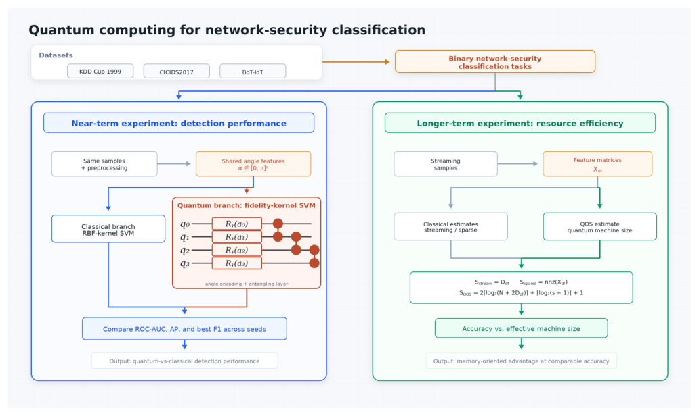
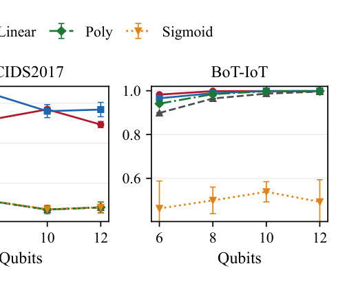
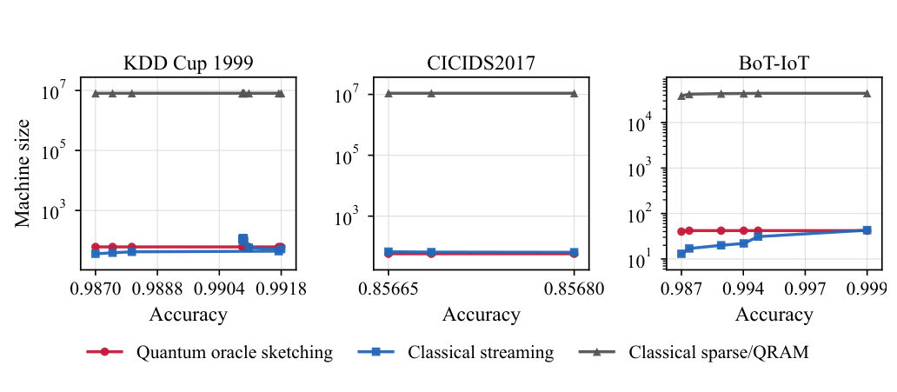
Summary. This paper assesses the utility of quantum computing for network security classification by examining two aspects: immediate performance and future resource scaling. Near-term results show quantum kernels are sometimes competitive but not universally superior to classical methods. More significantly, the work demonstrates that quantum methods may offer a substantial memory advantage for handling massive, streaming datasets compared to explicit classical storage models.
Why it may be interesting. While the core application is in cybersecurity, the methodology involves quantum feature mapping, kernel methods, and resource estimation (memory scaling), which are relevant theoretical tools in quantum information processing.
Main problem. The paper systematically investigates how quantum computing can contribute to network-security classification, analyzing both near-term performance gains and long-term memory efficiency.
Main result. Quantum kernels are competitive but task-dependent for near-term classification, while the primary long-term advantage lies in memory-efficient data access via Quantum Oracle Sketching (QOS).
Method. The study employs two complementary methods: evaluating quantum-kernel Support Vector Machines (SVMs) on standard datasets for near-term testing, and using Quantum Oracle Sketching (QOS) to estimate memory requirements for streaming data.
Model / system. The model involves applying quantum feature mapping (via angle encoding of SVD coordinates) to classical network-security data (KDD Cup 1999, CICIDS2017, BoT-IoT) within the framework of quantum-kernel SVMs.
Key observables. Classification metrics (ROC-AUC, AP, F1 score) for near-term; Effective memory-size proxy ($S_{QOS}$) compared to classical storage ($S_{sparse}$) for long-term.
Important parameters / regimes. Dataset choice, kernel type (quantum fidelity vs. classical RBF), feature filtering threshold ($\min df$), and qubit counts (for ablation studies).
Assumptions / limitations. The near-term comparison assumes the data pipeline and SVM objective are fixed, isolating the kernel's contribution. The long-term analysis is an estimate-based comparison of memory size, not a runtime speedup claim.
Figures summary. Figure 2 shows ROC-AUC ablation across different kernel choices; Figure 3 compares the required machine size (QOS vs. Classical streaming/sparse) versus accuracy for the memory efficiency analysis.
Paper structure. The paper is structured around two main experiments: first, a near-term comparison of quantum vs. classical SVM kernels on multiple datasets; second, a long-term analysis using QOS to estimate memory advantages for streaming data access.
Quantum computing has already been explored in several network-security applications. However, how quantum computing may contribute to network-security classification in both the near term and the longer term has not been systematically discussed. This paper studies this question through two complementary experiments. First, we evaluate near-term quantum-kernel support vector machines (SVMs) on practical network-security classification tasks and compare them with classical SVM baselines on KDD Cup 1999, CICIDS2017, and BoT-IoT. Across these runs, quantum kernels are competitive. They can match or improve classical baselines in some settings, while classical RBF kernels remain stronger in others. This suggests that near-term quantum-kernel methods should be evaluated as practical, dataset-dependent alternatives to classical kernels rather than as uniformly superior replacements. Second, we use quantum oracle sketching (QOS) to study a longer-term memory advantage for classification with streaming classical samples. In QOS, samples are processed online and used to incrementally construct an approximate quantum oracle, which provides coherent query access for downstream quantum algorithms without retaining the entire dataset. Under the QOS-inspired machine-size estimate, comparable accuracy corresponds to a substantially smaller effective memory-size proxy than explicit sparse/QRAM-style storage. Compared with a simple streaming proxy, the result is more nuanced because aggressive feature filtering can make the streaming dimension small. This suggests that the long-term value of quantum computing for network-security classification may lie in memory-efficient data access rather than immediate runtime speedup. Together, these experiments show how quantum computing may contribute to network-security classification from near-term classification performance and longer-term memory efficiency.
Authors: Xue Yang, Rigui Zhou, Dax Enshan Koh, Siong Thye Goh, Yitao Tang, ShiZheng Jia, Young-Wook Cho, Hongyu Chen
Type: both · Category: quantum information and computing · PDF: https://arxiv.org/pdf/2609.36702v1
Analysis basis: full PDF text, analyzed in chunks
Topic relevance: quantum measurements 1/5
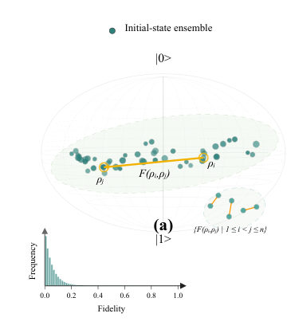
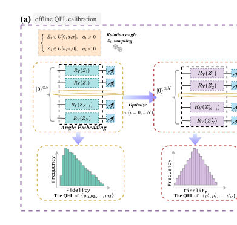
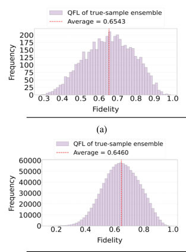
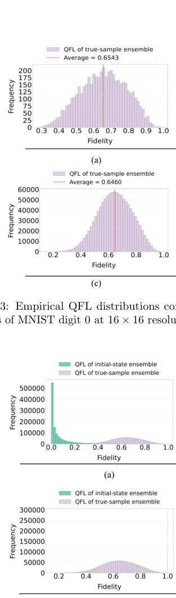
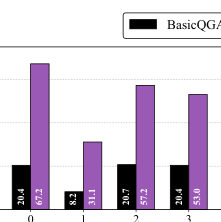
Summary. This paper introduces BasicQGAN, a novel QGAN framework for single-circuit image generation that avoids patch-based decomposition. It leverages the Quantum Fidelity Landscape (QFL)—a measure of pairwise quantum fidelity—to theoretically constrain and calibrate the quantum prior before adversarial training. Experiments show this calibration leads to stable, high-quality image synthesis using fewer quantum resources.
Why it may be interesting. The work provides a rigorous geometric constraint (QFL) derived from quantum information theory to stabilize the training of complex quantum machine learning models, which is highly relevant for understanding resource limitations in NISQ devices.
Main problem. To improve Quantum Generative Adversarial Networks (QGANs) for end-to-end image generation by overcoming the limitations of patch-based methods.
Main result. The proposed BasicQGAN framework, which incorporates Quantum Fidelity Landscape (QFL) calibration, achieves stable and effective pixel-level image generation with fewer resources than patch-based alternatives.
Method. The authors introduce the QFL, a theoretical structure based on pairwise quantum fidelity, and propose an offline calibration step to align the prior-induced QFL with the data-induced QFL before adversarial training.
Model / system. The model is a single-circuit QGAN operating in the NISQ era, utilizing an initial state ensemble $\{ ho_i\}$ whose structure is governed by the QFL. The generation process involves a shared unitary transformation and a fixed amplitude readout.
Key observables. Quantum Fidelity Landscape (QFL), Squared Uhlmann fidelity, and the resulting bound on decoded sample separation.
Important parameters / regimes. The required number of qubits and trainable parameters; the learning rate used during QFL calibration (e.g., 0.3).
Assumptions / limitations. The approach assumes a fixed Lipschitz readout to derive the output-separation bound, and the core assumption is that the QFL captures the necessary structural information for stable training.
Figures summary. Figure 1 compares QFL histograms for initial, generated, and true sample ensembles. Figure 2 illustrates the two-stage BasicQGAN process: offline QFL calibration followed by online adversarial training. Appendix I shows FID curves and sample generations across various datasets.
Paper structure. The paper introduces the QFL theory, derives bounds relating fidelity to output separation, proposes the BasicQGAN framework with an offline calibration stage, and validates the method through extensive experiments on multiple grayscale image datasets.
Quantum Generative Adversarial Networks (QGANs) have emerged as representative generative models in the Noisy Intermediate-Scale Quantum (NISQ) era and have attracted increasing attention in quantum machine learning. However, most existing QGAN methods rely on patch-based decomposition strategies, which weaken the global consistency of generated images and increase quantum resource overhead. In this work, we investigate a simpler approach: pixel-level, end-to-end image generation using a single-quantum-circuit QGAN. By analyzing the structural matching relationship between the quantum prior and the target data distribution in Hilbert space, we provide a new theoretical perspective for understanding the training behavior of naive end-to-end QGANs. Specifically, we introduce the Quantum Fidelity Landscape (QFL), defined as the pairwise-fidelity structure induced by an ensemble of quantum states and preserved under shared unitary transformations of the quantum generation process. We show that, under a fixed Lipschitz readout, this invariant imposes a one-sided bound on decoded sample separation, motivating calibration of the prior-induced QFL before adversarial training. To validate this theoretical insight, we propose BasicQGAN, a QGAN framework incorporating quantum prior calibration. Before adversarial optimization, BasicQGAN aligns the prior-induced QFL with the data-induced QFL. Experimental results on small-scale grayscale image datasets show that BasicQGAN achieves stable and effective end-to-end pixel-level image generation while requiring fewer qubits and trainable parameters than representative patch-based quantum generators. Furthermore, experiments with different initial quantum-state ensembles show that QFL-calibrated ensembles achieve better generative performance.
Authors: Rishabh Batra, Fuyuki Kitagawa, Ryo Nishimaki, Takashi Yamakawa
Type: theory · Category: quantum information and computing · PDF: https://arxiv.org/pdf/2609.37276v1
Analysis basis: full PDF text, analyzed in chunks
Topic relevance: quantum measurements 1/5
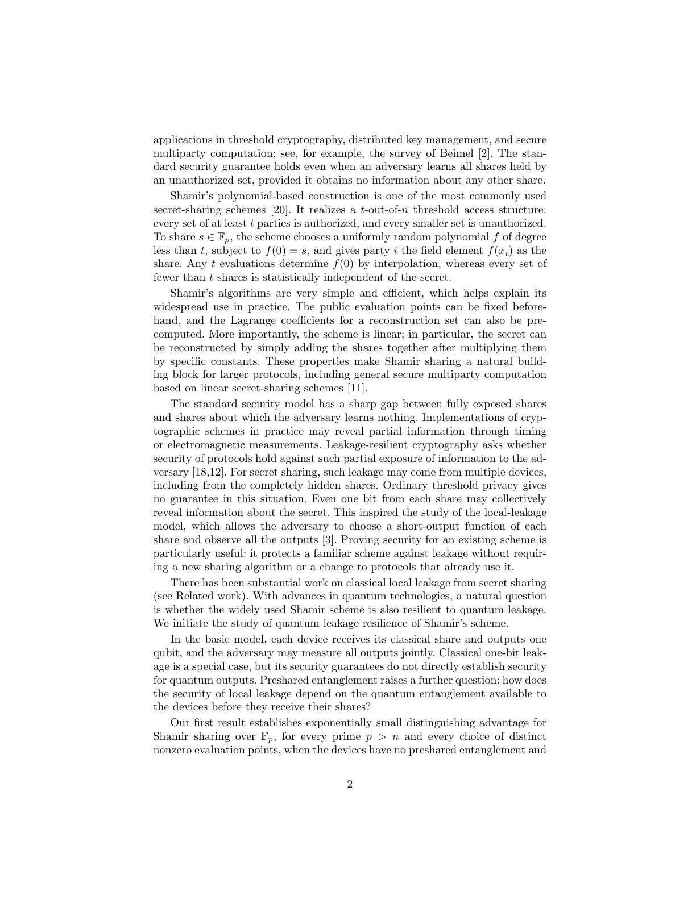
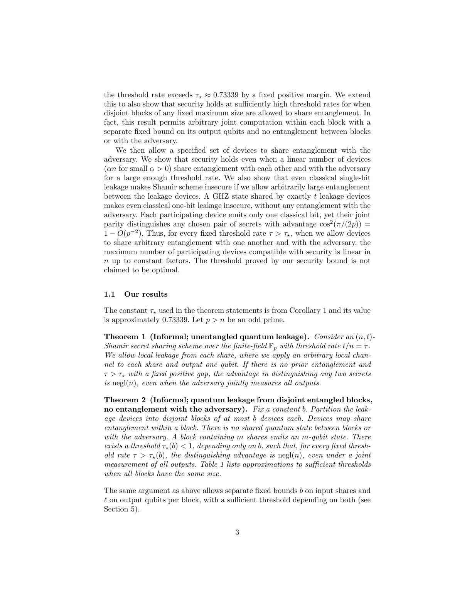
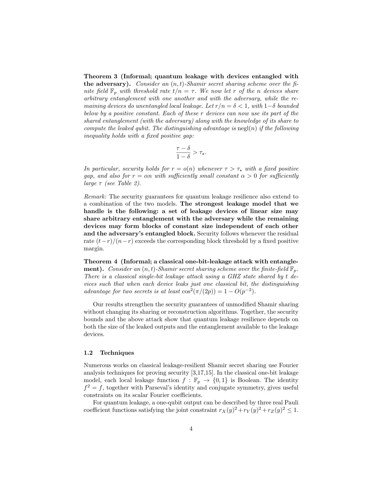
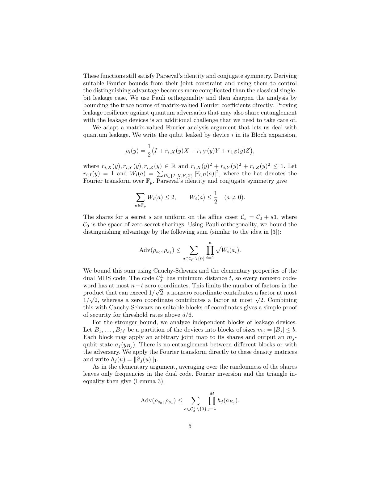
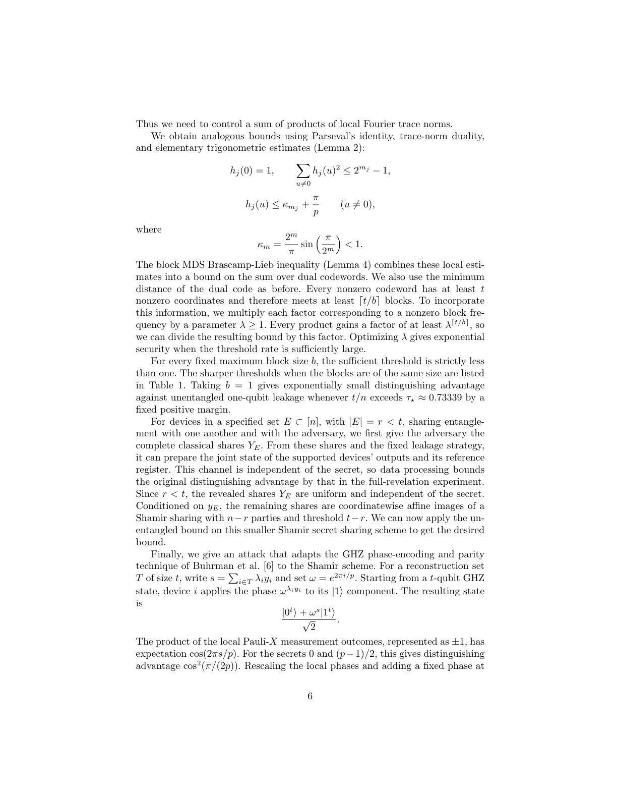
Summary. This work analyzes the security of Shamir's secret sharing scheme against quantum leakage attacks. Using advanced Fourier analysis on finite fields, the authors derive critical threshold rates required to ensure that the leaked quantum information is insufficient for an adversary to distinguish between possible secrets. The findings establish quantitative limits on the resilience of secret sharing in the presence of quantum side channels.
Why it may be interesting. It provides rigorous, information-theoretic bounds on the security of cryptographic primitives (secret sharing) against sophisticated quantum side-channel attacks, which is fundamental to quantum information security.
Main problem. The paper investigates the quantum leakage resilience of Shamir's secret sharing scheme, analyzing how easily an adversary can distinguish between two secrets based on leaked quantum information.
Main result. Security is maintained if the threshold rate $t/n$ exceeds a critical threshold $ au^\star \approx 0.73339$ when no entanglement is shared, and security can be extended to linear entanglement support under high threshold rates.
Method. The analysis employs finite-field Fourier analysis, bounding the distinguishing advantage using properties of the dual MDS code and techniques like the MDS Brascamp-Lieb inequality.
Model / system. The model is Shamir's secret sharing over prime fields, where the leakage is modeled as a local quantum channel outputting qubits from each share.
Key observables. Distinguishing advantage ($ ext{Adv}$), threshold rate ($ au = t/n$), and the critical threshold ($ au^\star$).
Important parameters / regimes. Threshold rate $ au$, field size $p$, and the entanglement support size ($\alpha n$).
Assumptions / limitations. The analysis assumes the structure of the dual MDS code and relies on bounding the Fourier coefficients of the leakage operators.
Figures summary. The notes mention tables summarizing sufficient thresholds for different block sizes and theorems relating to the security bounds.
Paper structure. The paper progresses by first establishing the basic quantum leakage bound without entanglement, then generalizing to disjoint entangled blocks, and finally analyzing the case where a linear number of devices share entanglement with the adversary.
We initiate the study of quantum leakage resilience of unmodified Shamir secret sharing over prime fields. A well-studied leakage model for Shamir's secret sharing classically is single-bit local leakage from each share. We consider its quantum analogue where, for each party, a local leakage channel takes as input the party's share and outputs a leaked qubit. Without preshared entanglement, we show that the distinguishing advantage is $2^{-Ω(n)}$ when the threshold rate $t/n=τ$ exceeds $τ_\star\approx0.73339$ by a fixed positive margin. More generally, we allow disjoint entangled blocks of any fixed maximum size where there is no entanglement between different blocks or with the adversary, and each block emits at most a fixed number of qubits. Security holds when the threshold rate is high enough (sufficiently close to one). We then allow a specified set of devices to share entanglement with the adversary. We show that security holds even when a linear number of devices ($αn$ for small $α>0$) share entanglement with each other and with the adversary for a large enough threshold rate. As a complementary negative result, we also show that even classical single-bit leakage makes Shamir scheme insecure if we allow arbitrarily large entanglement between the leakage devices. A GHZ state shared by exactly $t$ leakage devices makes even classical one-bit leakage insecure, without any entanglement with the adversary. In this attack, each participating device emits only one classical bit, and their joint parity distinguishes any chosen pair of secrets with a constant advantage. Thus, for fixed threshold rates above $τ_\star$, the maximum number of devices that may share arbitrary entanglement with one another and with the adversary while preserving security is linear in $n$ up to constant factors, although the optimal support fraction remains open.
Authors: Jia-Chen Shi, Shupeng Xu, Utkarsh Khandelwal, Nashra Pistawala, Luminita Harnagea, Steven J. May, Ritesh Agarwal
Type: experiment · Category: strongly correlated electrons · PDF: https://arxiv.org/pdf/2609.36353v1
Analysis basis: full PDF text, analyzed in chunks
Topic relevance: quantum measurements 1/5
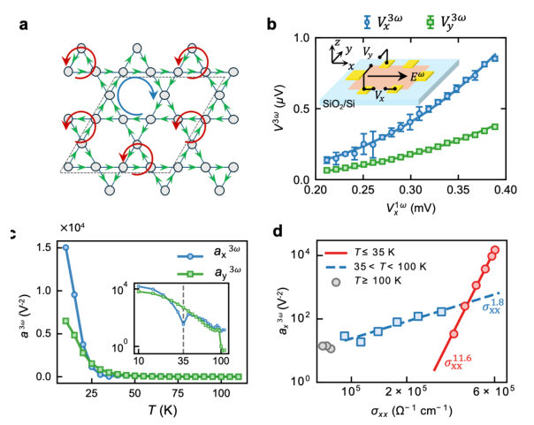
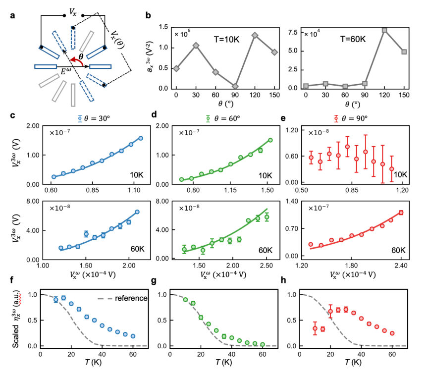
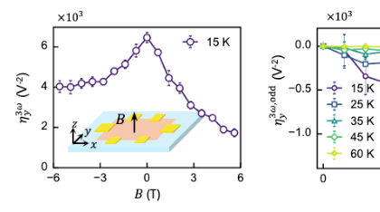
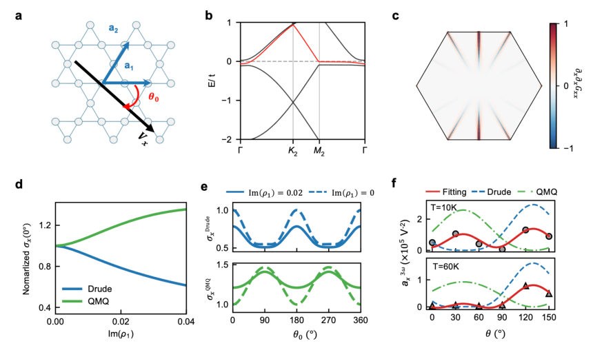
Summary. This work uses third-order nonlinear transport measurements to investigate a hidden, low-temperature electronic phase in the kagome metal $ ext{RbV}_3 ext{Sb}_5$. The detection of temperature-dependent kinks and magnetic field-odd components confirms electronic reconstruction and time-reversal symmetry breaking. The analysis attributes the observed directional anisotropy to the quantum metric quadrupole, linking nonlinear transport directly to loop-current order.
Why it may be interesting. The use of higher-order nonlinear transport to diagnose subtle symmetry breaking (TRSB) and electronic reconstruction in a correlated material like a kagome metal is highly relevant for understanding emergent quantum phases.
Main problem. The study aims to probe a subtle, low-temperature hidden electronic phase, possibly involving loop-current order, in kagome metals.
Main result. The emergence of a field-odd transverse third-harmonic response and a distinct kink in the longitudinal response near 35 K strongly indicate electronic reconstruction and time-reversal symmetry breaking.
Method. The research utilizes third-order nonlinear transport measurements ($ ext{V}{ ext{III}}/ ext{V}^3$) by applying AC electric fields and measuring the resulting third harmonic voltage.}
Model / system. The physical system is the kagome metal $ ext{RbV}_3 ext{Sb}_5$. The theoretical framework involves modeling the low-temperature state using a loop-current charge-density-wave (CDW) model.
Key observables. Third-harmonic response ($ ext{n}=3$), longitudinal and transverse nonlinear coefficients ($ ext{a}{ ext{III}}, ext{a}'$).}}$), and the magnetic field-odd component ($ ext{h}'_{ ext{III}
Important parameters / regimes. Temperature ($T$), applied magnetic field ($B$), and the angle ($ heta$) of the driving electric field.
Assumptions / limitations. The nonlinear response is successfully decomposed into contributions from the conventional Drude term and the quantum metric quadrupole (QMQ) term.
Figures summary. Figures show the cubic dependence of the third-harmonic voltage on the driving field, the temperature dependence of the nonlinear coefficients highlighting the 35 K kink, and the angular dependence of the response.
Paper structure. The paper establishes third-order nonlinear transport as a sensitive probe, presents measurements showing anomalies at 35 K (longitudinal) and field-odd components (transverse), and finally models the anisotropy using the QMQ contribution within a loop-current CDW framework.
A hidden low-temperature phase with possible loop-current order has been proposed in the kagome metals AV$_3$Sb$_5$ (A=K, Rb or Cs), but its experimental signatures remain subtle and indirect. Here, we use third-order nonlinear transport to probe this hidden phase in RbV$_3$Sb$_5$. At ~35 K, the longitudinal cubic response develops a strong kink and pronounced directional anisotropy with a strong departure from common relaxation time scaling, while the transverse cubic response acquires a magnetic field-odd component at the same temperature. Their coincident onset identifies the third-harmonic response as a sensitive marker of the low-temperature electronic reconstruction with time-reversal broken symmetry. Crucially, we find that the quantum metric quadrupole contributes directly to the longitudinal third-order response. In a loop-current charge-density-wave model, its direction selective enhancement captures the observed angular reconstruction. Our work shows how higher-order nonlinear transport translates subtle changes in electronic symmetry and quantum metric into measurable electrical signatures in quantum materials that is important for studying complex electronic phases of matter.
Authors: Yu Chen, Ananta Mukherjee, Mingyang Yang
Type: theory · Category: quantum information and computing · PDF: https://arxiv.org/pdf/2609.37091v1
Analysis basis: full PDF text, analyzed in chunks
Topic relevance: quantum measurements 1/5
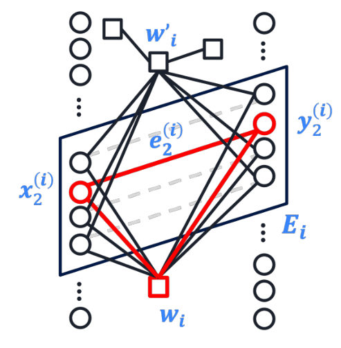
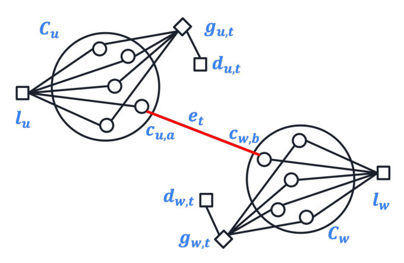
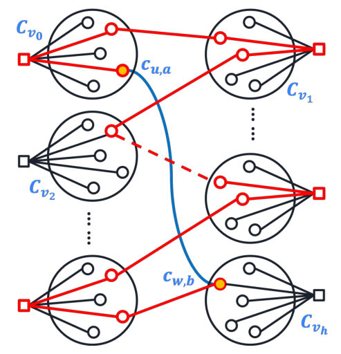
Summary. This paper determines quantum query lower bounds for graph problems like triangle listing and spanner construction within the general graph query model. It extends the quantum query recording framework to prove these bounds by reducing the graph problems to intermediate search tasks. The results establish significant theoretical limits on the efficiency of quantum algorithms for analyzing graph structure.
Why it may be interesting. The rigorous application of advanced quantum query complexity techniques, particularly the recording method, to fundamental graph problems provides deep insights into the inherent computational difficulty of graph structure discovery.
Main problem. The paper establishes quantum query lower bounds for two specific relational graph problems: listing all triangles in a graph and constructing a multiplicative spanner.
Main result. It achieves a first non-trivial quantum lower bound for triangle listing ($\Omega(n^{3/2-o(1)})$) and provides a bound for $k$-spanner construction ($\Omega(n^{1 + 1/2\mu_k})$).
Method. The analysis extends the quantum query recording framework to handle bidirectional oracles, deriving bounds by reducing the graph problems to intermediate multi-block search problems (BHVF and RMIF).
Model / system. The work operates in the general graph query model, utilizing quantum query complexity theory. The core technical tool is the 'recording method,' which tracks information across multiple query steps in a shared quantum record.
Key observables. Quantum query complexity, recording progress ($\Delta_{t,k}$), and the success probability of finding hidden values.
Important parameters / regimes. Graph size ($n$), number of blocks ($B$), size of the hidden space ($N$), and the target spanner parameter ($k$).
Assumptions / limitations. The results are derived under the general graph query model (mixed model). The $k$-spanner bounds are compared against conjectures related to the Erdős girth conjecture.
Paper structure. The paper first extends the quantum query recording framework for bidirectional oracles and establishes a generic blockwise soundness lemma. It then uses this framework to derive lower bounds for intermediate search problems (BHVF/RMIF), which are subsequently used to prove the final bounds for triangle listing and $k$-spanner construction.
This paper gives quantum query lower bounds for two relational graph problems, triangle listing and explicit multiplicative spanner construction, in the general graph query model, where quantum adjacency, degree and neighborhood queries are all available in arbitrary superposition. Both results are obtained by reductions via intermediate multi-block search problems. We extend the quantum query recording framework by Zhandry (CRYPTO 2019) and Hamoudi and Magniez (ToCT 2023) to handle a recording architecture for bidirectional oracles and give a generic blockwise soundness framework, which for arbitrary families of local accepting projectors, gives an exact operator-norm characterization of their maximum overlap with the subspace of bounded weight records. Using the intermediate search problems, we exhibit a family of $n$-vertex graphs with $Θ(n)$ triangles on which listing any constant fraction of the triangles requires $Ω(n^{3/2-o(1)})$ quantum queries. This is the first nontrivial quantum lower bound for triangle listing, a question raised by Jiang and Peng (ICML 2026). Further, we show that, for every fixed $k\ge 7$, constructing a multiplicative $k$-spanner requires $Ω(n^{1+\frac{1}{2μ_k}})$ quantum queries, where $μ_k=k/3+O(1)$. For $k\in\{7,8\}$ the bound is $Ω(n^{5/4})$, which matches what would be implied by an unproven instance of the Erdős girth conjecture, and for large $k$ the exponent $1+\frac{3}{2k}$ exceeds the $1+\frac{4}{3k}$ implied by the provable high girth dense graphs due to Lazebnik, Ustimenko and Woldar, 1995.
Authors: Anbang Wu, Liqiang Lu, Pu Pang, Jianwei Yin, Jingwen Leng, Minyi Guo
Type: theory · Category: quantum information and computing · PDF: https://arxiv.org/pdf/2609.36574v1
Analysis basis: full PDF text, analyzed in chunks
Topic relevance: analog quantum simulation 1/5
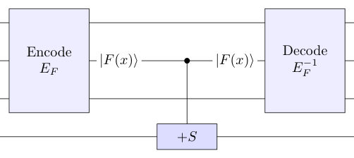
Summary. This paper presents the Parallel Phase Kickback (PPK) technique to efficiently implement quantum gates defined by complex phase arithmetic. It achieves this by separating the cost of calculating the phase function from the cost of applying it. The technique shows significant gate count savings, particularly when the rotation parameters have disjoint binary supports, making it crucial for scaling quantum algorithms.
Why it may be interesting. While focused on quantum computation, the rigorous analysis of resource scaling (T-gates) for implementing complex unitary transformations is foundational for designing quantum algorithms that might interact with AMO systems, especially those requiring precise phase control.
Main problem. The paper addresses the challenge of efficiently computing and applying complex quantum phase rotations, specifically those defined by a weighted sum of parameters, using shared quantum arithmetic.
Main result. It develops the Parallel Phase Kickback (PPK) technique, showing that when rotation weights have disjoint binary support, the T-gate cost can be significantly reduced, achieving near-linear scaling with the number of rotations.
Method. The core method involves three steps: coherently encoding the weighted sum into an auxiliary register, adding this sum to a phase-gradient state to imprint the phase, and then uncomputing the auxiliary information.
Model / system. The model is quantum computation utilizing diagonal quantum gates, analyzed within the Clifford+T gate set. The process involves multiple registers: data qubits, a phase sum register, an encoder workspace, and a phase-gradient reference state.
Key observables. Gate counts, specifically T-gate counts, and the resulting phase accuracy ($\delta_{ ext{ang}}$).
Important parameters / regimes. The bit resolution $b$ (determining the phase precision $2^b$), the number of weights $M$, and the structure of the weights (e.g., disjoint binary support).
Assumptions / limitations. The analysis assumes the weights are supplied and focuses on the logical circuit cost, separating the cost of phase function representation from its application.
Figures summary. Figure 1 illustrates the PPK process flow, detailing the sequence of Encode $ o$ Add $ o$ Decode across the data, shift, workspace, and reference registers.
Paper structure. The paper first introduces the problem of phase accumulation via weighted sums. It then details the PPK construction, proving correctness and analyzing costs for general weights, followed by specialized analyses for two rotations and weights with disjoint binary support, culminating in cost comparisons across different techniques.
A layer of diagonal quantum gates can be specified by an integer-valued function on computational basis states. This description suggests implementing the layer by evaluating that function reversibly and translating its value into a phase using a shared quantum register. We develop this viewpoint for parallel phase kickback (PPK): the weighted sum of several rotation parameters is computed coherently, added once to a phase-gradient state, and then uncomputed. The construction separates the cost of representing a phase function from the cost of applying it. We prove correctness, give explicit error bounds, and analyze logical gate counts for general weights, pairs of rotations, and weights with disjoint binary support. With Clifford-only encoding, a batch uses at most $4(b-1)$ T gates at $b$-bit phase resolution, excluding initialization. The first phase reference is prepared with independent rotations synthesized by Gridsynth; additional phase-gradient states then follow from the disjoint-support construction with $O(b)$ T gates each. The resulting bounds identify when shared phase arithmetic reduces amortized rotation cost and when encoding overhead limits that advantage.
Authors: Vivek Chakrabhavi, Walt Chavarria, Jonathan J. Heckman, Steven Rayan
Type: theory · Category: other · PDF: https://arxiv.org/pdf/2609.35977v1
Analysis basis: full PDF text, analyzed in chunks
Topic relevance: analog quantum simulation 1/5
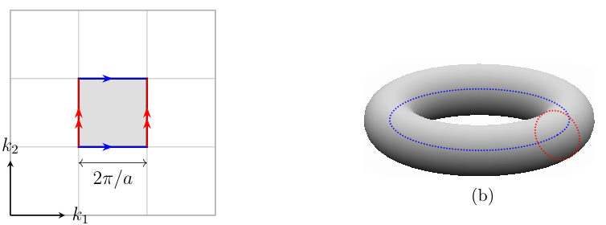
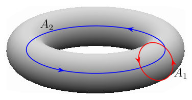
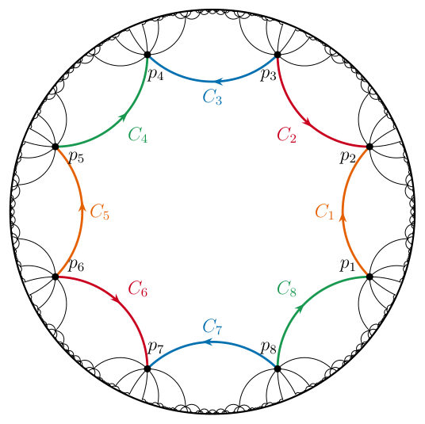
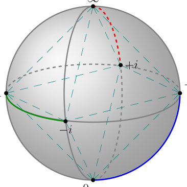
Summary. This work extends topological band theory beyond the standard 2D quantum Hall effect by analyzing systems on high-dimensional parameter spaces or curved manifolds. It shows that the topological invariants are governed by higher-order curvature terms, generalizing the Chern number concept. This provides a robust theoretical tool for characterizing topological phases in complex, higher-dimensional physical settings.
Why it may be interesting. The generalization of topological invariants to higher dimensions and curved spaces provides a powerful mathematical framework applicable to modern condensed matter systems beyond simple lattice models.
Main problem. The paper generalizes topological band theory, traditionally applied to 2D quantum Hall systems, to systems defined on high-dimensional parameter spaces or curved manifolds.
Main result. The topological invariants generalize from the Chern class to higher-order curvature invariants involving the symplectic form and the Berry curvature, leading to quantized contributions in Kubo-like formulae.
Method. The theory constructs a Berry connection and curvature on the high-dimensional parameter space $M_\Theta$, generalizing the standard integral quantization procedures.
Model / system. The study considers quantum Hall systems on Riemann surfaces of genus $g>1$ or matter on compact oriented manifolds of dimension $4\ell+2$. The analysis uses hyperbolic band theory as an explicit example.
Key observables. Generalized Hall conductivity $\sigma_{Hall}$ and higher integral invariants $ u_m$, which are quantized integers.
Important parameters / regimes. The dimension of the parameter space ($d>2$) and the genus of the underlying manifold ($g>1$).
Assumptions / limitations. The analysis requires defining the symplectic form $S$ on the moduli space $M_\Theta$ and retaining the full differential-geometric data on the parameter space.
Figures summary. Figure 1 illustrates the Brillouin zone for a square lattice as a quotient torus $T^2$. Other figures relate to the geometry of the parameter space and background gauge potentials.
Paper structure. The paper progresses by first establishing the standard 2D case, then generalizing the theory to higher dimensions using background $p$-form potentials, and finally illustrating the general framework with a concrete example on the genus-two Bolza Riemann surface.
We study the topological band theory of quantum Hall systems in which the adiabatic flux parameters of an external gauge potential form a high-dimensional manifold. This situation arises both for strongly correlated matter on spatial Riemann surfaces of genus $g > 1$, as well as in the formal study of matter on compact oriented manifolds of dimension $4\ell+2 = 2p$ coupled to $p$-form gauge potentials. In these cases, the underlying topological invariants defined over the parameter space are significantly richer than the low-dimensional (i.e., two-dimensional) case and involve both the curvature (i.e., first Chern class) as well as higher order curvature invariants. These higher curvature invariants correspond to topologically protected contributions to Kubo-like formulae, constructed from correlation functions of the physical current operators. We illustrate these general considerations with an explicit example from hyperbolic band theory based on the genus-two Bolza Riemann surface, a case which has recently been simulated on a synthetic-dimension platform.
Authors: Antonio A. Mele, Francesco A. Mele, Jarrod R. McClean, Thomas E. O'Brien
Type: theory · Category: quantum information and computing · PDF: https://arxiv.org/pdf/2609.37890v1
Analysis basis: full PDF text, analyzed in chunks
Topic relevance: quantum measurements 1/5
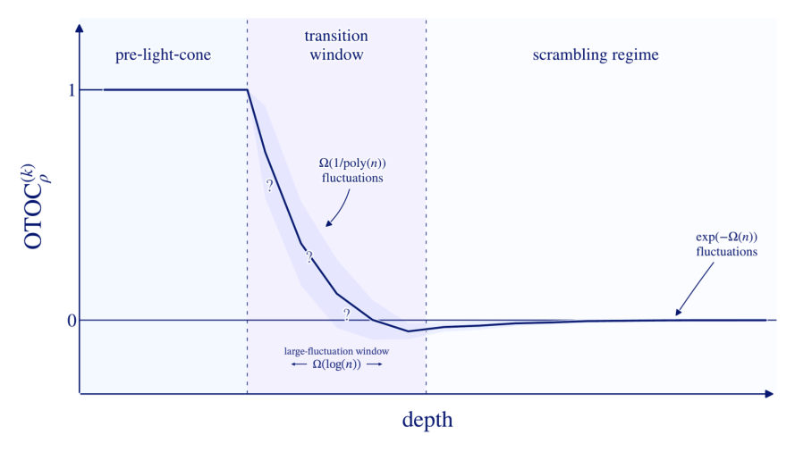
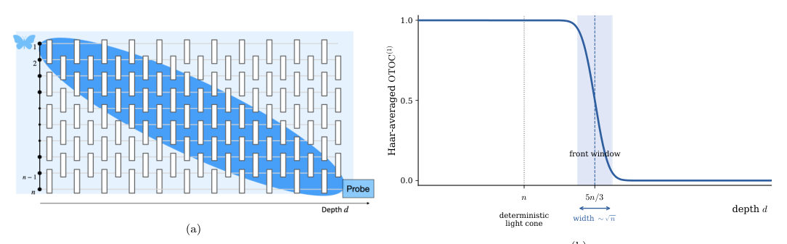
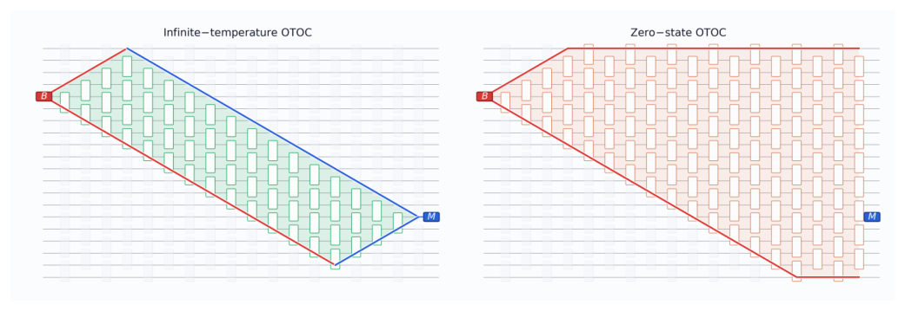
Summary. This paper proves that Out-of-Time-Order Correlators (OTOCs) in random quantum circuits retain significant, measurable fluctuations as system size grows, thus providing a pathway for verifiable quantum advantage. The authors develop theoretical bounds and a novel classical algorithm to estimate these OTOCs efficiently by exploiting the localization of gate contributions within the circuit structure.
Why it may be interesting. This work provides rigorous theoretical guarantees about the robustness of OTOC measurements against circuit randomness, which is crucial for designing verifiable quantum advantage experiments on near-term hardware.
Main problem. The paper addresses the challenge of verifying quantum advantage using observable measurements in random quantum circuits, specifically overcoming the issue of observable concentration.
Main result. They prove that fixed-order Out-of-Time-Order Correlators (OTOCs) exhibit inverse-polynomial circuit-to-circuit fluctuations at system-scale depths for local random circuits.
Method. The authors use theoretical proofs based on relating the change in ensemble-averaged OTOC to lower bounds on the circuit-to-circuit variance, and develop a classical algorithm for efficient estimation.
Model / system. The model involves local random quantum circuits, specifically analyzed using 1D Haar-random brickwork circuits acting on $n$ qubits.
Key observables. Out-of-time-order correlators ($ ext{OTOC}(k)$), particularly $ ext{OTOC}(1)$ and the infinite-temperature endpoint OTOC ($ ext{OTOC}_\infty$).
Important parameters / regimes. Fixed order $k$, system size $n$, and circuit depth $d$. The fluctuations are most visible in a depth window of $O(\sqrt{n})$ around $d^*=5n/3$ in 1D.
Assumptions / limitations. The analysis relies on bounding the error introduced by separating gates into a 'retained' region ($E_R$) and a 'random' region, and assumes the OTOC can be approximated by a conditional mean.
Figures summary. Figures illustrate the depth dependence of $ ext{OTOC}(k)$ showing the transition from constant values to fluctuating regimes, and detail the geometry of the influential 'eye-shaped region' of gates.
Paper structure. The paper first establishes the general theorem on inverse-polynomial fluctuations. It then applies this to 1D circuits, deriving specific variance bounds ($\Omega(n^{-1/2})$) and developing a classical algorithm to estimate the OTOC at the critical depth by restricting the calculation to the localized 'eye-shaped region'.
Demonstrating quantum advantage on current quantum hardware is a central goal of quantum computing, and random quantum circuits underpin many leading proposals. Yet sampling-based demonstrations are often difficult to verify, while observable-based approaches face a different challenge: concentration can suppress differences between circuit instances. Recent experiments have put forward the estimation of out-of-time-order correlators (OTOCs) in random circuits as a promising task for verifiable quantum advantage, yet whether their circuit-to-circuit fluctuations survive concentration as system size grows has remained open. Here we show that they do. For broad classes of local random circuits in any fixed spatial dimension, we prove inverse-polynomial fluctuations of fixed-order OTOCs at system-scale depths. In one-dimensional Haar-random brickwork circuits, we further show that macroscopically many gates contribute to these fluctuations, yet in each layer they remain confined to a sublinear-width region. As a byproduct, we develop a classical algorithm exhibiting the first rigorous improvement over brute-force classical simulation of OTOCs in 1D. Although classical hardness remains open, our results rule out strong concentration as an obstruction to OTOC-based proposals for verifiable quantum advantage.
Papers from primary archives without highlighted authors or any topic match. Click to expand.
Authors: Ryotaro Tajima, Rei Sato, Yosuke Iyama, Ryo Kiguchi, Yoshitake Kitanishi
Type: theory · Category: strongly correlated electrons · PDF: https://arxiv.org/pdf/2609.36708v1
Analysis basis: full PDF text, analyzed in chunks
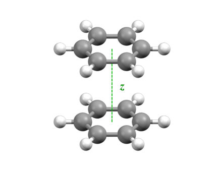
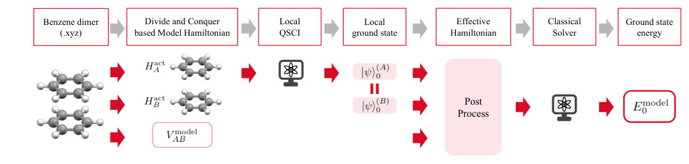
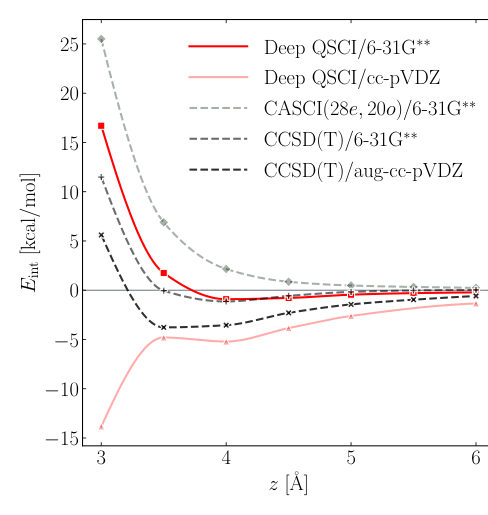
Summary. This paper introduces Deep QSCI, a novel quantum algorithm that combines divide-and-conquer techniques with configuration selection to calculate weak intermolecular interactions. By reusing calculations from a single monomer, it drastically reduces the required quantum resources for simulating the benzene dimer. The method provides a resource-efficient pathway to model interaction curves, although quantitative accuracy remains limited by orbital consistency issues.
Why it may be interesting. This work is highly relevant to AMO physics and quantum chemistry as it proposes a resource-efficient quantum algorithm to tackle complex, weakly interacting molecular systems, directly addressing the scaling challenges of full quantum simulations.
Main problem. The paper aims to accurately evaluate the weak $\pi$-$\pi$ stacking interaction energies in the benzene dimer, a problem requiring precise description of electron correlation on a small energy scale.
Main result. The proposed Deep QSCI method yields an attractive minimum energy of $-0.91 ext{ kcal/mol}$ at $4.0 ext{ Å}$ using the 6-31G** basis, which is compared against high-level $ ext{CCSD(T)}$ benchmarks.
Method. The authors propose Deep QSCI, which merges the divide-and-conquer strategy of Deep VQE with the configuration selection of QSCI. This allows the calculation of the dimer Hamiltonian by reusing a reduced local basis derived from a single monomer calculation, significantly reducing the required quantum register size.
Model / system. The system studied is the benzene dimer, modeled using an effective Hamiltonian constructed from the monomer's reduced local basis and an intermonomer interaction term. The calculation is performed in an active space framework, decomposing the dimer into two identical monomers.
Key observables. Interaction energy ($ ext{E}_{ ext{int}}$) as a function of intermolecular separation ($z$), with specific values reported for 6-31G** ($-0.91 ext{ kcal/mol}$ at $4.0 ext{ Å}$) and comparison to $ ext{CCSD(T)}$ ($-1.14 ext{ kcal/mol}$).
Important parameters / regimes. The quantum register size is reduced from 40 to 20 qubits for the monomer CAS(14e,10o) using 6-31G, and the calculations are performed across various basis sets (6-31G, cc-pVDZ).
Assumptions / limitations. Key limitations include the potential for insufficient consistency of active orbitals and reduced local bases between monomers, and the fact that the resulting Hamiltonian is a fragment-based model, not an exact decomposition.
Figures summary. The notes mention Figure 1 showing the sandwich-type benzene dimer and Figure 2/3 illustrating the schematic workflow of Deep QSCI, detailing the reuse of monomer calculations to construct the effective dimer Hamiltonian.
Paper structure. The paper introduces the physical problem (benzene dimer interaction), proposes the Deep QSCI methodology by combining Deep VQE and QSCI, details the procedure of reusing monomer calculations to build the effective dimer Hamiltonian, presents preliminary results comparing to classical benchmarks, and concludes by discussing limitations regarding orbital consistency and charge transfer.
Accurate evaluation of $π$--$π$ stacking interactions requires a description of electron correlation on a small energy scale. Direct variational quantum calculations of the benzene dimer with CAS(28e,20o) require 40 qubits and deep circuits. Here, we propose Divide-and-Conquer Quantum-Selected Configuration Interaction (Deep QSCI), combining the divide-and-conquer idea of Deep VQE with QSCI, and apply it to the sandwich benzene dimer. We perform QSCI for one monomer and construct a reduced local basis by applying particle-number-conserving one-electron excitations to its ground state. Using this basis and the intermonomer interaction Hamiltonian, we build and diagonalize an effective Hamiltonian of the dimer. Since the monomers have the same structure, the QSCI result is reused for both monomers and across intermolecular distances, reducing the required quantum register from 40 to 20 qubits for the monomer CAS(14e,10o). With 6-31G**, the model gives an attractive minimum of -0.91 kcal/mol at 4.0 $Å$, compared with the counterpoise-corrected CCSD(T) value of -1.14 kcal/mol. With cc-pVDZ, a large cancellation appears between the product-state interaction energy and the energy lowering by diagonalization. This may reflect insufficient consistency of the active orbitals and reduced local bases between monomers. Orbital consistency, reduced-space convergence across basis sets, and charge transfer remain key issues for quantitative accuracy. Deep QSCI thus provides a resource-efficient approach to constructing model interaction curves without repeating monomer quantum calculations at each separation.
Authors: Jinze Yang, Yangyang Li, Xiu-Hao Deng
Type: theory · Category: quantum information and computing · PDF: https://arxiv.org/pdf/2609.37368v1
Analysis basis: full PDF text, analyzed in chunks
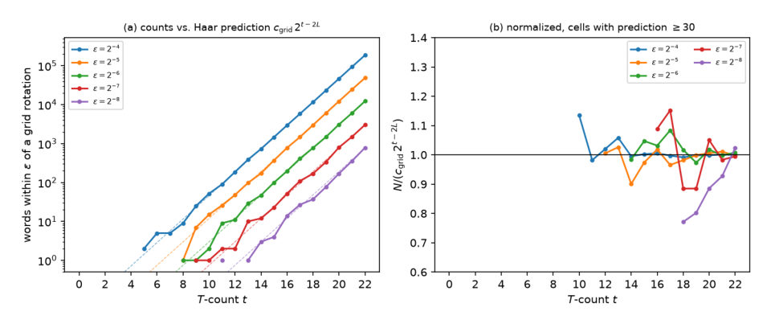
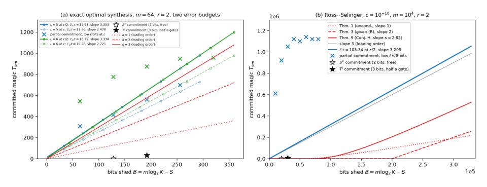
Summary. This paper derives a fundamental 'Memory-Magic Exchange Law' governing the trade-off between using classical memory versus pre-committing magic quantum states when compiling quantum circuits. By employing advanced number theory and information theory, the authors establish rigorous lower bounds on this exchange rate, which is crucial for understanding the resource scaling of fault-tolerant quantum computation.
Why it may be interesting. While focused on abstract compilation theory, the resource constraints derived here (e.g., minimum T-gate count) directly impact the feasibility and scaling of implementing quantum algorithms on near-term hardware.
Main problem. The paper determines the fundamental exchange rate ($\alpha$) between two resources—classical memory carried across computation rounds versus pre-committed magic states—required for fault-tolerant, streaming quantum circuit compilation.
Main result. The analysis establishes rigorous lower bounds on this exchange rate, suggesting theoretical limits like $\alpha=3$ under certain conjectures, which dictates the efficiency of compiling complex quantum operations.
Method. The work employs advanced techniques from number theory, including determinant methods, equidistribution estimates, and information-theoretic bounds (like Fano's inequality) to constrain resource requirements.
Model / system. The model is the ancilla-free, coordinatewise Clifford+T quantum compilation scheme, which processes quantum operations in a streaming manner over multiple rounds.
Key observables. The exchange rate $\alpha$ (T-gates committed per bit of memory forgone), the required T-gate count ($T_{ ext{pre}}$), and the required precision ($\epsilon$).
Important parameters / regimes. The error parameter $\epsilon$, the number of qubits $m$, and the total number of rounds $r$.
Assumptions / limitations. The rate $\alpha=3$ relies on an unproven equidistribution conjecture; the analysis is specific to coordinatewise synthesis.
Paper structure. The paper develops by first establishing initial bounds using number theory, then improving these bounds using determinant methods and sphere section analysis, culminating in comparisons with information-theoretic limits and conjecture-based results.
A phase that reaches a fault-tolerant processor in additive pieces can be remembered until the last piece arrives, or executed on arrival: the first option costs classical memory carried across rounds, the second costs magic states committed before the phase is known. We determine the exchange rate $α$, committed $T$ gates per bit of memory forgone, for ancilla-free coordinatewise Clifford+$T$ compilation. The Ramanujan bound for the Clifford+$T$ lattice gives $α\ge2$ with explicit constants, the square-root barrier of the spectral method. An elementary determinant method, using that quaternion numerators are lattice points on spheres in both real embeddings of $\mathbb{Q}(\sqrt2)$, counts words near an arbitrary rotation coset below that barrier and gives $α\ge11/5$ asymptotically and unconditionally, and a height dichotomy for the resulting sphere sections raises this to $α\ge17/7$. At Clifford-framed cosets the volume law holds up to subexponential factors: all but a vanishing fraction of $z$-rotations need $T$-count $(3-o(1))\log_2(1/\varepsilon)$, and processes whose committed pieces are close to Clifford-framed $z$-rotations, including per-rotation pipelines, have $α\ge3-o(1)$, which a fractional-passthrough family attains under the Ross-Selinger typical-cost hypothesis. Under an equidistribution conjecture supported by exhaustive enumeration to $T$-count 22, $α=3$ in general and memory should be shed in whole rotations. The bounds hold even when the phases cancel to the identity; side information enters through a conditional entropy; probabilistic mixing halves the costs but not the rate. With clean ancillas and a phase-gradient catalyst, table lookups batched across coordinates drive the rate to $O(1/\log\log(1/\varepsilon))$, so the constant-rate law is specific to coordinatewise synthesis.
Authors: Ioannis Kolotouros, Raul Garcia-Patron
Type: theory · Category: quantum information and computing · PDF: https://arxiv.org/pdf/2609.37095v1
Analysis basis: full PDF text, analyzed in chunks
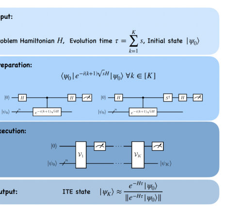
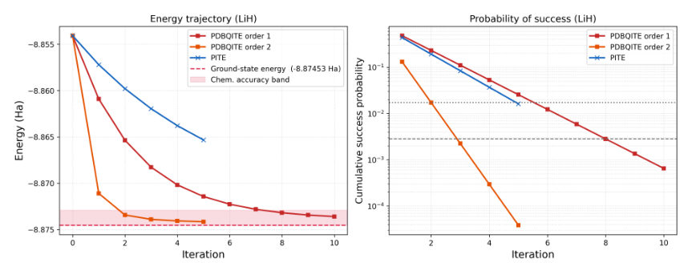
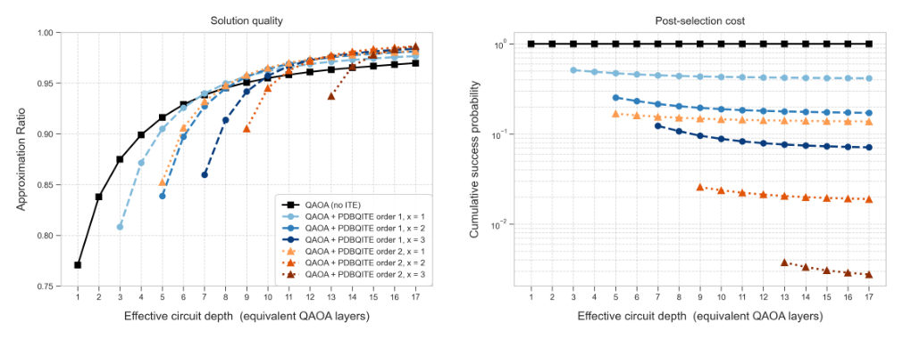
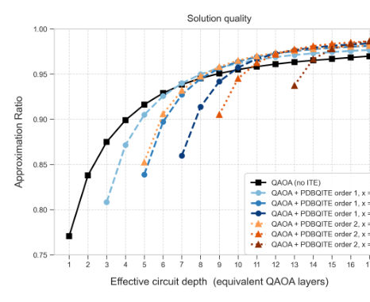
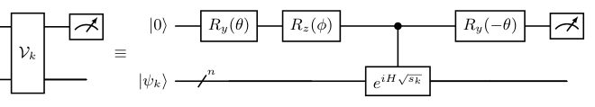
Summary. This paper presents PDBQITE, a novel, depth-efficient quantum algorithm for performing imaginary-time evolution to find ground states. By replacing the exponentially deep circuit of previous methods with a probabilistic, linear combination approach, it significantly reduces circuit depth. The algorithm is shown to outperform existing techniques on molecular Hamiltonians and optimization problems like MaxCut.
Why it may be interesting. This work provides a concrete, resource-efficient quantum algorithm for simulating fundamental quantum dynamics (ground state preparation) that directly addresses the depth scaling bottleneck in quantum simulation algorithms.
Main problem. The paper addresses the challenge of efficiently preparing the ground state of a target Hamiltonian using Imaginary-Time Evolution (ITE) with significantly reduced quantum circuit depth compared to prior methods.
Main result. The proposed PDBQITE algorithm achieves an exponential reduction in circuit depth compared to DB-QITE, and hybrid QAOA-PDBQITE schemes outperform standard QAOA for optimization problems like MaxCut.
Method. It introduces PDBQITE, a probabilistic variant of Double-Bracket QITE, which approximates the non-unitary ITE evolution by applying a linear combination of unitaries at each step.
Model / system. The core model is the quantum state evolution governed by the imaginary-time evolution operator $e^{-H au}$. Applications include finding the ground state of molecular Hamiltonians (e.g., LiH, BeH2) and solving combinatorial optimization problems like MaxCut and MIS.
Key observables. Approximation ratio (fidelity to the ground state), per-step success probability, and energy expectation values.
Important parameters / regimes. Number of iterations ($K$), time step size ($\sqrt{s}$), and the system size ($n$ qubits).
Assumptions / limitations. The primary trade-off is the exponential decay of the total success probability, although an analytical lower bound independent of system size is derived.
Figures summary. Figures compare the approximation ratio vs. QAOA depth for MaxCut, show the energy trajectory and cumulative probability of success for molecular Hamiltonians ($ ext{BeH}_2$, $ ext{LiH}$), and compare PDBQITE performance against PITE.
Paper structure. The paper introduces ITE and DB-QITE, details the implementation and theory of PDBQITE, evaluates its performance on MaxCut and molecular Hamiltonians, and concludes with a summary of the improved resource scaling.
Imaginary-time evolution (ITE) is a widely used technique for preparing the ground state of a target Hamiltonian. Building on the recently proposed framework of Double-Bracket quantum ITE (DB-QITE), we introduce a probabilistic variant (PDBQITE) that achieves an exponential reduction in circuit depth. Our algorithm requires only a single ancilla qubit and a quantum circuit that consists of one controlled real-time evolution and one mid-circuit measurement per iteration. The trade-off is an exponential decay of the total success probability with the number of iterations, for which we derive an analytical lower bound that is independent of system size. Our numerical simulations show that the per-step success probability remains close to unity, making it realistic to execute many iterations, thus providing a substantial improvement over prior constructions. We show that PDBQITE outperforms the near-term probabilistic algorithm PITE for ground-state preparation of molecular Hamiltonians, and that a hybrid QAOA-PDBQITE scheme achieves higher approximation ratios than QAOA at the same circuit depth on random regular graphs for the MaxCut problem.
Authors: Zheng Zhou, Yin-Chen He
Type: theory · Category: statistical mechanics · PDF: https://arxiv.org/pdf/2609.35960v1
Analysis basis: full PDF text, analyzed in chunks
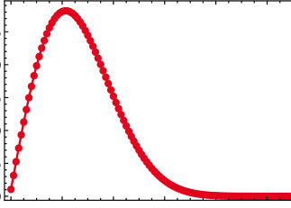
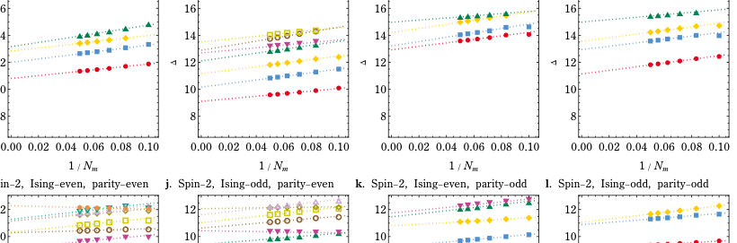
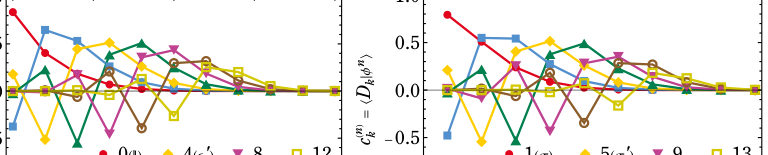
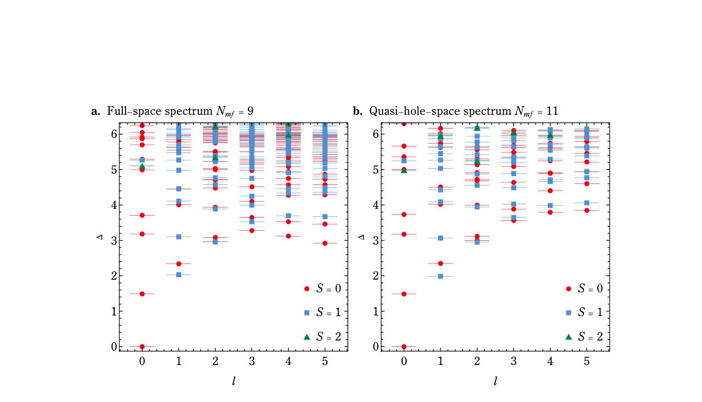
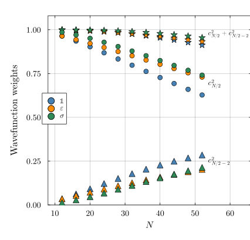
Summary. This work significantly advances the study of 3D CFTs using fuzzy-sphere regularization by developing a computationally efficient algorithm that resolves the full $\mathrm{SO}(3)$ symmetry. Key results include identifying many heavy operators for the 3D Ising CFT and establishing a general strategy for analyzing CFTs coupled to topologically ordered phases like FQH states.
Why it may be interesting. The connection between CFTs, topological order (FQH states), and advanced numerical techniques like ED on curved spaces is highly relevant for understanding critical phenomena in strongly interacting quantum systems.
Main problem. The paper advances the study of three-dimensional conformal field theories (CFTs) using fuzzy-sphere regularization, focusing on identifying and characterizing heavy primary operators.
Main result. A new $\mathrm{SO}(3)$-resolving exact diagonalization algorithm was developed, significantly reducing computational costs and allowing the identification of numerous previously unknown heavy scalar primaries for the 3D Ising CFT.
Method. The core method involves developing an exact diagonalization algorithm that fully resolves the $\mathrm{SO}(3)$ rotational symmetry on the fuzzy sphere, alongside projecting the Hilbert space onto quasi-hole states for FQH systems.
Model / system. The primary model is the 3D Ising CFT, studied via fuzzy-sphere regularization. The analysis also extends to critical points involving fractional quantum Hall (FQH) states, utilizing the Laughlin state wave functions.
Key observables. Scaling dimensions ($\Delta$) of primary operators, the full $\mathrm{SO}(3)$ symmetry resolution, and the structure of wave functions related to area-preserving diffeomorphisms.
Important parameters / regimes. Scaling dimension $\Delta \approx 16.5$ (for heavy primaries), the magnetic monopole strength, and the size of the system ($N_m$).
Assumptions / limitations. The method assumes that the fuzzy-sphere framework provides a suitable regularization for the CFTs, and that the quasi-hole projection effectively isolates the relevant CFT spectrum.
Figures summary. Figures plot eigenvalues of $\Xi = |K|^2$ versus the dilatation operator expectation value, and show scaling dimensions ($\Delta$) derived from different theoretical methods (Fuzzy vs. CB vs. $\epsilon$-exp).
Paper structure. The paper details the setup of the fuzzy-sphere Ising model, describes the construction of the Hilbert space using $\mathrm{SO}(3)$-resolved ED, and then presents the results regarding operator identification and FQH projections.
Fuzzy-sphere regularization has recently emerged as a powerful framework for studying three-dimensional conformal field theories (CFTs). In this work, we exploit symmetry and Hilbert-space structures to substantially advance this framework. We develop an exact-diagonalization algorithm that resolves the full $\mathrm{SO}(3)$ rotational symmetry, reducing computational costs by factors of several hundred. For the three-dimensional Ising CFT, we identify around 100 primary operators, including a large number of previously unknown heavy scalar primaries up to scaling dimension $Δ\approx16.5$. We also resolve the tension between previous fuzzy-sphere and bootstrap results regarding the parity-odd scalar primary. Furthermore, we identify a branch of scalar primaries associated with $φ^n$ operators in the $φ^4$ Lagrangian description, beginning with the identity, $σ$, $ε$, $ε'$, and $σ'$. Their wave functions exhibit a semi-classical structure closely related to states invariant under area-preserving diffeomorphisms of the sphere. Finally, we show that critical points involving fractional quantum Hall states can be studied within a substantially reduced Hilbert space spanned by quasi-hole states of the corresponding model quantum Hall wave functions like the Laughlin state. This suggests a general strategy for exploring CFTs intertwined with topologically ordered phases.
Authors: Zhiwei Song, Xin Wang, Marco Tomamichel, Kun Fang
Type: theory · Category: quantum information and computing · PDF: https://arxiv.org/pdf/2609.37240v1
Analysis basis: full PDF text, analyzed in chunks
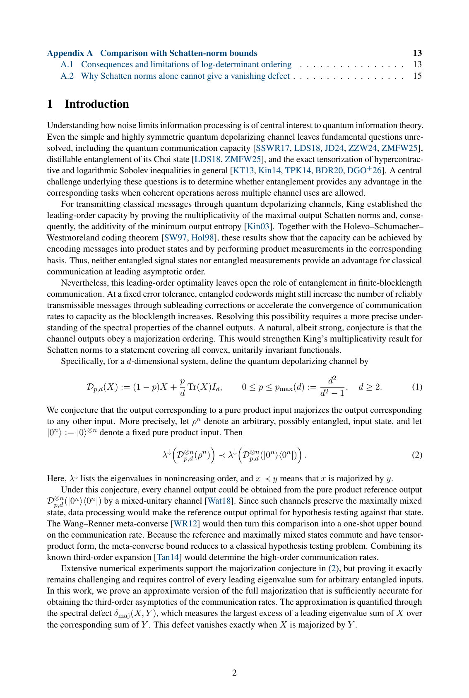
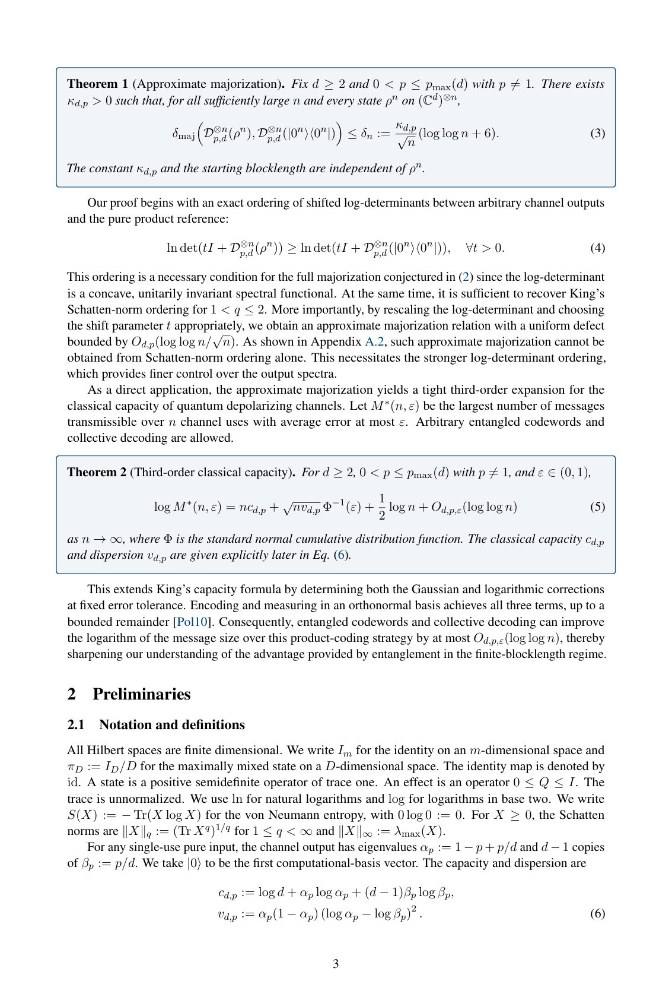
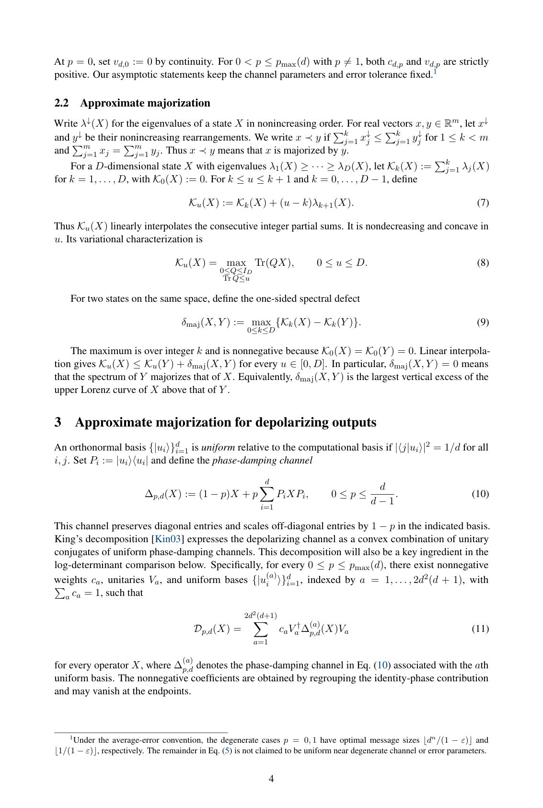
Summary. This work tackles the question of entanglement advantage in quantum communication using depolarizing channels. By proving an approximate majorization relation for the channel outputs, the authors derive a precise third-order expansion for the classical capacity. This shows that while entanglement offers some improvement over product coding, this advantage is sub-logarithmic in the blocklength $n$.
Why it may be interesting. The rigorous mathematical tools developed (majorization, log-determinant ordering) provide powerful, non-standard ways to quantify resource advantages (like entanglement) in quantum communication protocols, which is highly relevant to open quantum systems theory.
Main problem. The paper investigates whether entanglement provides an advantage for classical communication capacity when using multiple uses of quantum depolarizing channels in the finite-blocklength regime.
Main result. They prove an approximate majorization relation for the channel outputs, leading to a tight third-order expansion showing that entanglement improves the message size by at most $O(\log \log n)$ bits over product coding.
Method. The analysis combines proving an approximate majorization relation using log-determinant orderings with established quantum information theory bounds (like the hypothesis-testing meta-converse).
Model / system. The system analyzed is the quantum depolarizing channel, $D_{p,d}$, applied over $n$ uses. The core mathematical tools involve majorization ($\prec$), spectral defects ($\delta_{ ext{maj}}$), and log-determinant functionals.
Key observables. Classical capacity ($c_{d,p}$), spectral defect ($\delta_{ ext{maj}}$), and the message size $\log M^*(n, \varepsilon)$.
Important parameters / regimes. Depolarizing parameter ($p$), blocklength ($n$), and error tolerance ($\varepsilon$).
Assumptions / limitations. The authors conjecture a full majorization relation but only prove an approximate version, which is sufficient for the third-order capacity expansion.
Figures summary. Not specified.
Paper structure. The paper builds from establishing necessary spectral orderings (log-determinant) to proving an approximate majorization bound, which is then directly applied in the context of quantum channel capacity to derive the finite-blocklength expansion.
A central challenge in quantum information theory is to determine whether entanglement provides an advantage for information processing when coherent operations across multiple channel uses are allowed. For depolarizing channels, King's proof of the additivity of the minimum output entropy rules out such an advantage for classical communication at leading asymptotic order, while leaving open the possibility of an advantage for higher orders. In this work, we conjecture a majorization relation for the outputs of depolarizing channels and prove an approximate version of this conjecture. Our proof combines an exact ordering of shifted log-determinants with an anti-concentration bound for the spectrum of the product-state output, refining King's analysis based on Schatten norms. As a direct application, we obtain a tight third-order expansion for the classical capacity of quantum depolarizing channels. Consequently, entangled codewords and collective decoding can improve the message size over the product-coding strategy by at most $O(\log \log n)$ bits, sharpening our understanding of the role of entanglement in the finite-blocklength regime.
Authors: Jiani Fei, Jinzhao Wang
Type: theory · Category: quantum information and computing · PDF: https://arxiv.org/pdf/2609.35986v1
Analysis basis: full PDF text, analyzed in chunks
Summary. This work establishes the theoretical limits for cloning mixed quantum states by deriving the optimal asymptotic fidelity for both known and unknown spectral information. The authors introduce a novel cloner construction that is proven to outperform the standard Purify-Clone-Trace (PCT) channel, providing crucial benchmarks for quantum information theory.
Why it may be interesting. The rigorous derivation of optimal cloning bounds and the explicit comparison to established methods like PCT provides fundamental theoretical benchmarks for quantum information processing protocols.
Main problem. The paper determines the asymptotic global fidelity for cloning generic mixed quantum states, comparing the optimal achievable fidelity against established bounds like the Purify-Clone-Trace (PCT) channel.
Main result. The authors derive explicit formulas for the optimal fidelity for both known and unknown spectra, proving that their proposed cloner strictly outperforms the PCT method for both full-rank and projector states.
Method. The analysis uses asymptotic limits, local asymptotic normality (LAN), and Gaussian fidelity bounds to establish both upper and lower bounds on the cloning fidelity.
Model / system. The system involves quantum state cloning channels acting on mixed states in a fixed dimension $d$. The inputs are characterized by simple, full-rank spectra or by rank-$r$ orthogonal projectors.
Key observables. Root Uhlmann fidelity ($F$), asymptotic fidelity values ($F_{ ext{orb}}, F_{ ext{univ}}$), and the infidelity coefficient.
Important parameters / regimes. Fixed dimension $d$, cloning gain $\gamma = \lim m_n/n > 1$, and the rank $r$ of the projector state.
Assumptions / limitations. The main theorems apply to the regime of simple full-rank spectra; the analysis relies on asymptotic limits and LAN approximations.
Figures summary. Figure 1 summarizes the cloner construction using Schur-Weyl labels. Figure 2 compares the fidelities achieved by the proposed cloner versus the PCT upper bound for projector states, showing the cloner is superior.
Paper structure. The paper progresses by first establishing the optimal fidelity for known spectra, then deriving the minimax optimum for unknown spectra, and finally providing separate, detailed analyses for projector states and comparing the results rigorously against the PCT channel.
We determine asymptotic global fidelities of cloning generic mixed states with simple (non-degenerate) full-rank spectra. In fixed dimension $d$, let $n$ inputs and $m_n$ outputs satisfy $m_n/n\toγ>1$. For a known simple full-rank spectrum $p_1>\cdots>p_d>0$, we prove that the optimal root fidelity between the entire output and the product target state is $$ F_\rm{orb}(γ,p) =\prod_{i
Authors: Chaobin Liu
Type: theory · Category: quantum information and computing · PDF: https://arxiv.org/pdf/2609.36213v1
Analysis basis: full PDF text, analyzed in chunks
Summary. This paper develops a weighted-shift framework for constructing Bivariate Bicycle Group-Algebra (BBGA) quantum codes over group algebras. It rigorously proves that certain constructed codes, particularly those derived from nonabelian or specific weighted-shift structures, cannot be equivalent to simpler, ordinary abelian realizations. This expands the known landscape of quantum error-correcting codes.
Why it may be interesting. This work advances the algebraic theory of quantum error-correcting codes by providing explicit constructions that challenge the boundaries of known equivalence classes, which is fundamental for designing robust quantum hardware.
Main problem. The paper investigates Bivariate Bicycle Group-Algebra (BBGA) codes defined over finite group algebras, aiming to distinguish codes constructed via nonabelian group structures from those equivalent to simpler abelian realizations.
Main result. The authors construct specific quantum error-correcting codes, including one over $A_4 imes C_6$ and another over $\mathbb{F}_2[C_3]$, which are proven to be inequivalent to any ordinary abelian 2BGA realization.
Method. The construction relies on weighted-shift formulations using commuting shifts derived from left and right multiplications in the group algebra, leading to CSS codes defined by polynomial generators.
Model / system. The model is quantum error correction using stabilizer codes defined over the group algebra $\mathbb{F}_2[G]$ of a finite group $G$. Examples include $G=D_3$, $G=A_4 imes C_6$, and $G=C_3$.
Key observables. Code parameters $[[n, k, d]]$, check weights ($W_X, W_Z$), minimum stabilizer supports, and the automorphism group of the support graph $\Gamma$.
Important parameters / regimes. Code length $n=144$ and $n=18$; dimension $k=16$ and $k=4$; distance $d=12$ and $d=3$.
Assumptions / limitations. The primary distinction is drawn between the general weighted-shift formulation and the restricted class of ordinary abelian 2BGA realizations.
Figures summary. The notes do not describe specific figures, but refer to tables summarizing known code parameters and the use of displayed formulas defining code generators.
Paper structure. The paper builds from establishing the general weighted-shift formulation for BBGA codes, presenting known examples (like those for $D_3$), constructing a specific nonabelian example ($A_4 imes C_6$) and proving its inequivalence, and finally presenting a weighted-shift example ($C_3$) that extends beyond the ordinary abelian class.
We study a weighted-shift formulation of bivariate bicycle group-algebra (BBGA) codes over finite group algebras. One binary shift acts by right multiplication and the other by left multiplication; associativity ensures that these shifts commute even for a nonabelian seed group. Bivariate polynomials in the shifts, including mixed monomials, therefore define CSS codes. We give explicit sparsity bounds and distinguish nonabelian seed groups from codes that are intrinsically inequivalent to abelian realizations. For $D_3$, a pair of weighted permutation shifts generates a regular $C_6\times C_{12}$ action and recovers the known $[[144,12,12]]$ and $[[144,14,14]]$ bivariate bicycle codes. We also present a computer-verified $[[144,16,12]]$ code over $A_4\times C_6$, with every check of weight eight. This example belongs to the established nonabelian two-block group-algebra family. Exhaustive low-weight enumeration and an intrinsic stabilizer-support invariant certify that it is inequivalent to any ordinary abelian BB or two-block group-algebra realization, even under qubit permutations combined with local Clifford operations. Finally, a nonuniform weighted-shift construction over $\mathbb{F}_2[C_3]$ yields a $[[18,4,3]]$ code with check weights six and eight. An exact enumeration of its minimum stabilizer supports rules out every ordinary binary 2BGA realization at that length, under the same equivalence. This establishes that the unrestricted weighted-shift formulation extends beyond the ordinary 2BGA class, even with an abelian seed group.
Authors: Chaoguo Wang, Jiaqi Tian, Xin Gui
Type: both · Category: strongly correlated electrons · PDF: https://arxiv.org/pdf/2609.37707v1
Analysis basis: full PDF text, analyzed in chunks
Summary. This work explores the $ ext{Mo}4 ext{TGa}$ compounds, which possess flat-band electronic characteristics. The researchers found a conflict between theoretical predictions of metallic behavior and experimental measurements showing non-metallic transport. They resolve this by proposing that chemical disorder, induced by the substitution of elements, is responsible for suppressing the metallic transport properties in these sensitive intermetallics.} ext{Ge
Why it may be interesting. The study directly addresses the interplay between electronic structure theory (flat bands, correlation) and real-world material imperfections (chemical disorder), which is a key area in strongly correlated electron physics.
Main problem. The paper investigates the origin of non-metallic electrical transport features that coexist with thermodynamically metallic electronic signatures in a new series of compounds.
Main result. The discrepancy is attributed to the high sensitivity of narrow-band materials to chemical disorders, suggesting a chemically tunable platform for studying disorder-controlled transport.
Method. The study combines theoretical calculations (DFT, COHP/ICOHP) with extensive experimental measurements, including transport ($ ho(T)$), heat capacity ($C_p(T)$), and X-ray crystallography.
Model / system. The physical system is the $ ext{Mo}4 ext{TGa}} ext{Ge}$ series ($ ext{T} = ext{Co}, ext{Rh}, ext{or Ir}$), derived from the flat-band superconductor $ ext{Mo4 ext{PtGa}$. These compounds are structurally related and exhibit flat-band electronic states.
Key observables. Electrical resistivity ($ ho(T)$), Sommerfeld coefficient ($\gamma$) from $C_p(T)$, electronic band structure, and chemical bonding analysis via COHP/ICOHP.
Important parameters / regimes. Low temperatures, Fermi energy ($E_F$), and the chemical identity of the transition metal T ($ ext{Co}, ext{Rh}, ext{Ir}$).
Assumptions / limitations. The non-metallic transport features are not intrinsic semiconducting gaps but are instead induced by chemical disorder effects on the narrow-band electronic structure.
Figures summary. Figures detail the crystal structure, XRD patterns, magnetic susceptibility, temperature-dependent heat capacity, electronic band structures, and resistivity measurements for the studied compounds.
Paper structure. The paper follows a structure of structural characterization (XRD, composition) $\rightarrow$ electronic structure analysis (DFT, bonding) $\rightarrow$ thermodynamic measurements ($C_p(T)$) $\rightarrow$ transport measurements ($ ho(T)$), culminating in a unified explanation linking disorder to the observed transport paradox.
Flat-band electronic states can be highly sensitive to chemical perturbations, offering opportunities to access a broader range of electronic behaviors beyond that of parent materials. Here, we report the discovery of a new series of compounds, Mo4TGa16Ge (T = Co, Rh, or Ir), derived from the strongly correlated flat-band superconductor, Mo4PtGa17, via nominally preserving the total valence electron counts. All three materials crystallize in a noncentrosymmetric cubic space group, F-43m, with Ge selectively occupying one of the Ga sites in the parent compound. Although the total electron count remains the same, Mo4TGa16Ge exhibits significantly distinct properties from Mo4PtGa17. Theoretical calculations predict metallic electronic structures with narrow, dominant Mo-d states at the Fermi energy, while low-temperature heat capacity results demonstrate finite Sommerfeld coefficients. However, electrical transport measurements show predominantly non-metallic behaviors with small observed activation energies, excluding the possibilities of conventional semiconducting behaviors. Combining chemical bonding analysis, electronic structure and compositional determination from X-ray crystallography and spectroscopy, we propose that the coexistence of the non-metallic transport features and the thermodynamically metallic behaviors can be attributed to the high sensitivity of the narrow-band materials to chemical disorders. Thus, the discovery and investigation of Mo4TGa16Ge provide a chemically tunable platform for studying disorder-controlled transport in flat-band intermetallics.
Authors: Takaya Matsuura, Yohji Chin, Shohei Kiryu, Kosuke Fukui
Type: theory · Category: quantum information and computing · PDF: https://arxiv.org/pdf/2609.37699v1
Analysis basis: full PDF text, analyzed in chunks
Summary. This paper presents a novel family of quantum error-correcting codes designed for fault-tolerant quantum computation. These codes maintain a constant encoding rate and feature sublogarithmically growing stabilizer weights. Crucially, they support all logical Clifford operations using only efficient transversal and fold-transversal gates.
Why it may be interesting. It provides a concrete, mathematically rigorous construction for fault-tolerant quantum computation that addresses the critical trade-off between code rate, stabilizer weight, and native gate set complexity.
Main problem. The central challenge is constructing quantum error-correcting codes that simultaneously achieve a constant encoding rate, sublogarithmic stabilizer weight, and support for the entire logical Clifford group using only transversal and fold-transversal gates.
Main result. The authors introduce a family of quantum codes, derived from Steinberg modules via hypergraph products, that achieve this combination, providing a path toward fault-tolerant quantum computation with low space overhead.
Method. The construction relies on classical codes whose spaces are absolutely irreducible Steinberg modules of their Tanner-graph automorphism groups, which are then combined using the hypergraph product.
Model / system. The model involves quantum CSS codes constructed using the hypergraph product of classical codes derived from Steinberg codes associated with finite groups of Lie type (Chevalley groups).
Key observables. Constant encoding rate, sublogarithmically growing stabilizer weight ($w = (\log n)^{1/2-o(1)}$), and the ability to generate the full logical Clifford group.
Important parameters / regimes. The construction requires the code to be derived from Steinberg codes and involves the analysis of group theory structures (e.g., Tits buildings, BN-pairs).
Assumptions / limitations. The construction assumes the existence of specific algebraic structures (Steinberg modules) and relies on the properties of transversal and fold-transversal gates for gate synthesis.
Figures summary. Not specified in the provided notes.
Paper structure. The paper builds upon the need for codes with specific parameter regimes, detailing the construction based on Steinberg codes and the hypergraph product, and demonstrating the resulting gate set capabilities.
Low-space-overhead fault-tolerant quantum computation requires not only high-rate quantum error-correcting codes but also space-efficient implementations of logical operations. Transversal and fold-transversal gates are promising since they limit error propagation and require no additional qubits. However, the logical operations they enable are typically restricted, and a central challenge is to construct codes that combine a complete set of logical Clifford gates with favorable code parameters. In this work, we introduce a family of quantum codes with an asymptotically constant encoding rate and sublogarithmically growing stabilizer weight, while supporting the entire logical Clifford group using only transversal and fold-transversal gates. Our construction is based on classical codes whose code spaces are absolutely irreducible Steinberg modules of their Tanner-graph automorphism groups. Taking hypergraph products of these classical codes yields quantum codes for which all logical Clifford operations can be synthesized from a fixed set of transversal and fold-transversal gates. Moreover, the slow growth of the stabilizer weight enables a high error-correcting performance in small instances. These results provide a path toward fault-tolerant quantum computation with low space overhead using transversal and fold-transversal gates.
Authors: Seng W. Loke
Type: theory · Category: quantum information and computing · PDF: https://arxiv.org/pdf/2609.37210v1
Analysis basis: full PDF text, analyzed in chunks
Summary. This work investigates the optimal choice of quantum error-correcting codes for distributed quantum computation. The authors demonstrate that minimizing physical resource usage (ebits) is not the primary goal; instead, maximizing the code distance is crucial for maintaining a low logical error rate. The findings guide the selection of robust encoding schemes for implementing complex, non-local quantum gates.
Why it may be interesting. It provides concrete, quantitative guidelines for resource allocation in large-scale quantum processors, showing that hardware efficiency metrics (like ebit count) must be superseded by error-suppression metrics (like code distance) for reliable computation.
Main problem. The paper compares different quantum error-correcting encodings and node arrangements to minimize the Logical Error Rate (LER) when performing distributed quantum operations like transversal CNOTs and the global gate (GCZ).
Main result. Reducing ebit consumption alone is insufficient; the choice of encoding must balance ebit cost against achieving a large code distance to effectively suppress the logical error rate.
Method. The authors analyze the LER by comparing performance metrics across various Bivariate-Bicycle (BB) codes, demonstrating that larger, more robust encodings can outperform smaller, more ebit-efficient ones.
Model / system. The model is distributed quantum computation across multiple nodes (QPUs) utilizing fault-tolerant quantum error correction, specifically focusing on transversal gates like CNOT and GCZ.
Key observables. Logical Error Rate (LER), ebits required, and code parameters ($[[n, k, d]]$).
Important parameters / regimes. Physical error rate ($p$), code distance ($d$), and the ratio of logical to physical resources.
Assumptions / limitations. The analysis assumes a cloud service model where nodes are selected from a heterogeneous collection and focuses on transversal operations.
Figures summary. Figures illustrate the structure of distributed CNOTs and the decomposition of complex gates like GCZ into transversal operations, comparing the physical connections and resulting LER for different code choices.
Paper structure. The paper progresses by first establishing the problem of distributed operations, then comparing specific encoding choices (e.g., $[[90, 8, 10]]$ vs. $2 imes [[36, 4, 6]]$) for CNOTs, and finally extending the analysis to complex gates like GCZ, concluding with a general optimization framework for selecting the best encoding.
We compare and study different Bivariate-Bicycle (BB) encodings and node choices for distributed quantum operations such as transversal non-local CNOTs. We observe that while some encodings have more physical qubits requiring more ebits for a distributed computation, reducing ebit consumption alone might not be the best criterion for selecting an encoding for the logical qubits, if the goal is to reduce the logical error rate of the distributed computation; for example, one should also consider encodings with a larger distance, which using more physical qubits can provide. We consider distributed, or non-local, CNOTs and computation of the global gate (GCZ) over distributed logical qubits as examples. The choice of encoding enables particular concurrent operations; e.g., we show that a transversal physical GCZ on a self-dual $[[120,8,12]] BB$ code can realize eight concurrent logical GCZ operations after accounting for the logical permutation induced by transversal Hadamard.
Authors: Kaixin Ye, Qihe Yu, Yongjian Li, Yanan Zhang, Ye Chen, Rui Li, Lin Jiao, M. Smidman, Yongjun Zhang, Yu Liu, Huiqiu Yuan
Type: experiment · Category: strongly correlated electrons · PDF: https://arxiv.org/pdf/2609.37129v1
Analysis basis: full PDF text, analyzed in chunks
Summary. This paper reports comprehensive measurements on Ce4Ge7, a heavy-fermion material, detailing its magnetic and electronic response to magnetic fields and pressure. Key findings include an antiferromagnetic transition, a field-induced metamagnetic transition, and strong evidence pointing towards an antiferromagnetic quantum critical point at a specific pressure. The work utilizes advanced transport diagnostics like the anomalous Hall effect to probe the underlying correlated electronic states.
Why it may be interesting. The investigation of quantum critical points in heavy-fermion systems using pressure tuning is a canonical problem in condensed matter physics, providing experimental benchmarks for theories of quantum phase transitions and strongly correlated electron behavior.
Main problem. The study investigates the magnetic and transport properties of the heavy-fermion material Ce4Ge7 under external tuning parameters, specifically applied magnetic fields and hydrostatic pressure.
Main result. The material exhibits an antiferromagnetic transition, a field-induced metamagnetic transition accompanied by an anomalous Hall effect, and shows signatures of an antiferromagnetic quantum critical point near 10.2 GPa.
Method. The research combines single-crystal synthesis, structural characterization (XRD), and advanced transport measurements, including magnetization, specific heat, resistivity, and anomalous Hall effect measurements under high pressure using a diamond anvil cell.
Model / system. The system is single-crystalline Ce4Ge7, an orthorhombic heavy-fermion compound. The physics is analyzed using models for antiferromagnetic spin-wave excitations, Fermi liquid theory, and the intrinsic Karplus-Luttinger mechanism for the anomalous Hall effect.
Key observables. Antiferromagnetic transition temperature (TN), metamagnetic transition field, anomalous Hall conductivity (sigma_Axy), residual resistivity (rho_0), and the coefficient A in the temperature-dependent resistivity.
Important parameters / regimes. Magnetic field (up to 1.3 T), pressure (up to 24.3 GPa), and the critical pressure P_c = 10.2 GPa.
Assumptions / limitations. The analysis assumes that the anomalous Hall effect is dominated by the intrinsic Karplus-Luttinger mechanism, and that the low-temperature resistivity can be described by Fermi liquid or spin-wave models.
Figures summary. Figures illustrate the evolution of resistivity and magnetic susceptibility with temperature and pressure, showing the AFM transition, the metamagnetic jump, and the divergence of transport coefficients near the critical pressure.
Paper structure. The paper systematically presents measurements of magnetic and transport properties across varying fields and pressures. It first establishes the magnetic ground state (AFM transition), then analyzes the field-induced transitions (metamagnetism/AHE), and finally maps the phase diagram by studying the pressure dependence of the magnetic order and transport coefficients to locate the QCP.
We report the magnetic and transport properties of single-crystalline Ce$_4$Ge$_7$, which crystallizes in a non-centrosymmetric orthorhombic structure (space group C222$_1$). It undergoes an antiferromagnetic transition at $T_N$ = 7.3 K. When a magnetic field is applied along the $b$-axis, a metamagnetic transition occurs at 1.3 T (at 2 K). Correspondingly, this transition gives rise to an anomalous Hall effect, which is dominated by the intrinsic Karplus-Luttinger mechanism. Under hydrostatic pressure, $T_N$ of Ce$_4$Ge$_7$ initially increases slightly and is then gradually suppressed. For pressures above $P_c$ = 10.2 GPa, no magnetic order is observed. The divergence of the $A$ coefficient, the maximum of the residual resistivity, and the non-Fermi liquid behavior around $P_c$ indicate the possible existence of an antiferromagnetic quantum critical point in Ce$_4$Ge$_7$.
← Index · ← Previous · Next →